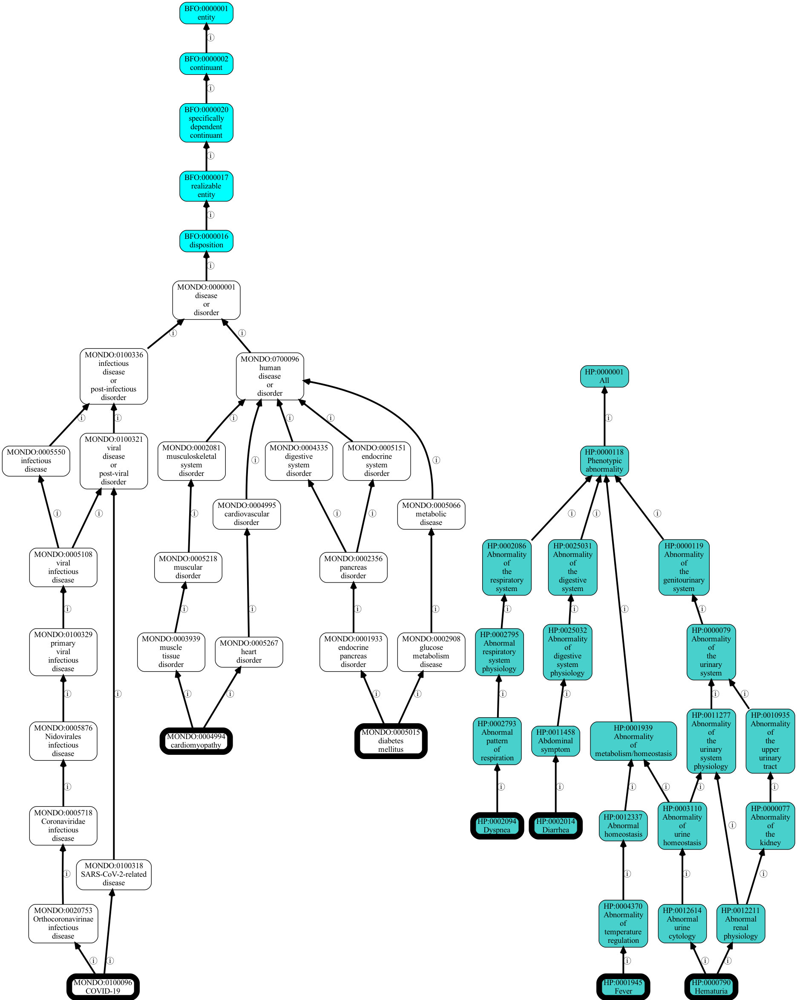

Ontology operations using OAK
This demonstrates the p3 (PhenoPacketPython) command line utility for interfacing with OAK to
do ontology operations.
First let's just see the operations:
%%bash
p3 --help
List all terms used
This iterates through a whole object showing all OntologyClass objects.
(note: all commands accept any of YAML, JSON, or RDF)
%%bash
p3 list-terms -O yaml ../../../examples/Phenopacket-covid.yaml | head -20
Validating phenopackets using ontologies
LinkML provides a generic and expressive validation framework encompassing:
- schema checks (e.g. required fields, types)
- ontology checks (e.g. terms are valid, not obsolete, belong to static or dynamic subsets)
For this example, we will use a fake example with a bad label and an obsolete class.
THE PHENOPACKET HERE IS DELIBERATELY ERRONEOUS
We can check using validate:
%%bash
p3 validate ../../../tests/input/Phenopacket-migrate-example.yaml
This returns with error status due to the data not validating.
TODO make this output friendlier
Repairing phenopackets using ontologies
Ontologies are not static:
- terms may become obsolete; in some cases a replacement will be indicated
- labels may change
In the first case, the migrate-obsoletes command will auto-replace obsoletes that have a replaced-by
In the second, update-labels will modify any labels.
For these commands you can either pass in an ontology object using --ontology, OR let OAK figure
out how to access the ontology. The default method is sqlite. There may be an initial lag.
Let's update the labels using the update-labels command:
!p3 update-labels ../../../tests/input/Phenopacket-migrate-example.yaml -o /tmp/fixed.yaml
We can see the changes that were made here:
!diff -u ../../../tests/input/Phenopacket-migrate-example.yaml /tmp/fixed.yaml
Note in the above the fake label for HP:0100637 was replaced by the current label obsolete Neoplasia of the nose but this indicates another issue - a class has been obsoleted since the phenopacket was made!
We can also apply the migrate-obsoletes command that will use term-replaced-by annotations:
!p3 migrate-obsoletes ../../../tests/input/Phenopacket-migrate-example.yaml -o /tmp/fixed.yaml
Let's see the changes that were made here:
!diff -u ../../../tests/input/Phenopacket-migrate-example.yaml /tmp/fixed.yaml
Visualizing Ontology terms
We can use OAK viz to visualize all terms used in a phenopacket (typically phenotypes or disease but could be any)
!p3 viz --ontology sqlite:obo:mondo ../examples/Phenopacket-covid.yaml -o output/covid.png
